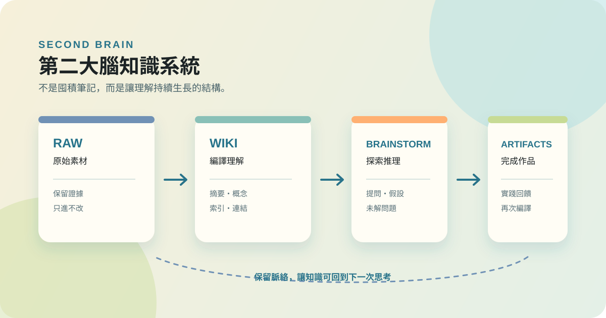

作品 · 學習工具
第二大腦知識系統
2026.08 · 個人專案

FIG. 34 — 產品主畫面
關於這個作品
這套第二大腦不是把所有筆記塞進同一個資料夾，而是依照知識工作的角色，分開保存原始素材、編譯後的理解、仍在探索的推理，以及已完成的作品。每個區域各司其職，讓收集、思考與產出不再互相覆蓋。
系統以 Markdown 與 Obsidian 作為可長期保存的基底，再由 LLM 協助進行編譯、概念萃取、索引與健康檢查。它保留來源、區分自身實踐與外部觀點，並把矛盾與未解問題視為下一輪思考的入口。
作品亮點
以 raw、wiki、brainstorming、artifacts 分開證據、理解、探索與成果
原始素材進入 raw 後維持唯讀，避免後來的觀點改寫原始證據
以編譯流程將來源轉成摘要、概念與索引，讓知識可以交叉連結與檢索
保留 self 與 external 的來源差異，讓實踐經驗能與外部觀點並列比較
用健康檢查追蹤索引、連結與概念結構的完整性